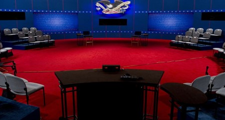

JAM
The activity 'Just a minute or JAM' is an impromptu speech where the speaker is supposed to express the idea (s) on the given topic, within the duration of a minute. It is quite common to see a speaker experiencing nervousness when asked to speak instantly.JOIN

JOIN
DEBATE
A debate is a discussion or structured contest about an issue or a resolution. A formal debate involves two sides: one supporting a resolution and one opposing it. Such a debate is bound by rules previously agreed upon. Debates may be judged in order to declare a winning side.JOIN

Group Discussion
Group discussion (GD) is a comprehensive technique to judge the suitability of an individual and his appropriateness for admission, scholarship, job, etc. GD assesses the overall personality – thoughts, feelings and behaviour - of an individual in a group.JOIN

Professional Body Elections
A debate is a discussion or structured contest about an issue or a resolution. A formal debate involves two sides: one supporting a resolution and one opposing it. Such a debate is bound by rules previously agreed upon. Debates may be judged in order to declare a winning side.JOIN
IOT & Data Analytics Workshop
Internet of Things (IoT) analytics is a data analysis tool that assesses the wide range of data collected from IoT devices. IoT analytics assesses vast quantities of data and produces useful information from it. IoT analytics are usually discussed in tandem with Industrial IoT (IIoT).JOIN

Technical Quiz Competition
A technical quiz is a type of quiz that focuses on testing knowledge and understanding of technical subjects, such as science, technology and engineering fields. It may include questions related to concepts, theories and problem-solving techniques.JOIN